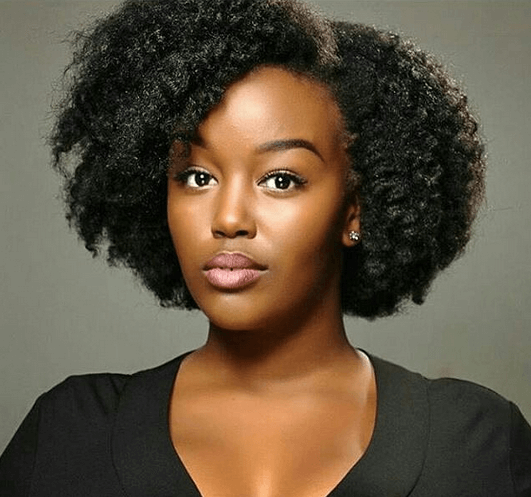

Sure
My life isn't perfect
But my hair is
Curly Hair
~Curly hair - a cruel mistress with more tangles
than you can conceivably get out or a beaut natural hairstyle with a
million different ways to wear it.
Either way, we're big fans of curly hairstyles, which is why we've rounded up all the hair inspiration you could ever need so you can be a fully fledged curly girl 24/7.
~Curly hair - a cruel mistress with more tangles
than you can conceivably get out or a beaut natural hairstyle with a
million different ways to wear it.
Either way, we're big fans of curly hairstyles, which is why we've rounded up all the hair inspiration you could ever need so you can be a fully fledged curly girl 24/7.
Curly Hair Tips
About Natural Hair
It Isn't Cheap
There isn't anything cheap, or even easy, about wearing your natural hair. Even though you no longer are spending time in the stylist's chair for braids or straighteners, you are now going to be buying products. It's easy to throw a lot of your budget into products, so before you head to the store make a plan. Consider what products you need, where you'll find them, and do your research beforehand to avoid disappointment. Of course, you're bound to find a product here and there that won't work for you. In those instances, try to find another curly girl you can trade it with for a product that works better for you.
Comparison Steals Your Joy
Believe it or not, people pay a lot of money in the pursuit of the type of hair you were born with. A lot of curly girls spend their days wishing their hair was something other than it is. Comparing your hair to others only steals your joy and ability to love your own strands. Embrace your texture! It's as unique and beautiful as you are.
It's A Lifestyle Adjustment
Curly hair takes a lot of work. Not only do you need to educate yourself on how to care for it, you need to invest the time into taking care of it correctly. This means setting aside time for wash days, drying, protective styling, trips to the stylist, and shopping for products. Additionally, curls can create some controversy. While society has come a long way, there are still workplaces and educational institutions that require or encourage women to straighten their natural textures. Be prepared to push back and offer education to help change these perceptions.
Videos
Do It Yourself
Afro Hair Styles

.jpg)

Know Your Hair Texture
Straight Hair ~Give it more love
Quick Tips~Straight hair is often shiny and easy to grow out, but it tends to get greasy faster than other hair types. To avoid this, Walters recommends using dry shampoo—even on the first day out of the shower after blow drying.
Product To Use~Volumizing shampoo and conditioner are a must,” says Walters, “because straight hair is going to lack texture.
Wavy Hair ~Don't weigh it down
Quick Tips~To keep wavy hair from looking unrefined, you’ll want to control the frizz right off the bat, says Walters. But don’t be quick to use too much product and weigh down your natural curl.
Product To Use~Your top concerns are volume and moisture, so Walters recommends reaching for shampoos and conditioners to keep your hair healthy and beautiful.You can wear hair mask, but you don’t want to weigh it.
Tight Coils ~A little bit of this, A liitle bit of that
Quick Tips~The only cool thing about frizz is everyone’s favorite science teacher, Ms. Frizzle, from The Magic School Bus. Fight frizz while keeping your hair healthy by keeping it moisturized and hydrated.
Product To Use~To keep your curls looking sleek, Walters says, “moisturizing shampoo and conditioner are a must.” She also notes, “you can even grab a moisturizing shampoo
Curly Hair ~More Moisture, Less Frizz
Quick Tips ~Finishing creams, oils and pomades—oh my! To keep your curls defined and moisturized, it’s okay to use these types of products, just in small doses and moderation.
Product To Use ~The key here is moisturize, moisturize, moisturize, says Walters. “So, grab a heavy moisturizing conditioner.”She also adds the importance of masks, noting that with this hair type, you can even “use a hair mask every time you shower because it will give your hair that much more moisture.When you want to define the finished look of your curls, Walters recommends adding finishing creams.
HOW TO STYLE ~
“Once out of the shower, do a quick and easy towel dry,” says Walters. “This is a perfect hair type for air drying [because] the more you blow dry, the more breakage and dryness you’ll get—making the hair dull.”
“Then use a heavy oil and/or a leave-in conditioner with a curl definer to give it that moisture we now know it needs.”
HOW TO STYLE ~
“Once out of the shower, do a quick and easy towel dry,” says Walters. “This is a perfect hair type for air drying [because] the more you blow dry, the more breakage and dryness you’ll get—making the hair dull.”
“Then use a heavy oil and/or a leave-in conditioner with a curl definer to give it that moisture we now know it needs.”
HOW TO STYLE ~
“Once out of the shower, do a quick and easy towel dry,” says Walters. “This is a perfect hair type for air drying [because] the more you blow dry, the more breakage and dryness you’ll get—making the hair dull.”
“Then use a heavy oil and/or a leave-in conditioner with a curl definer to give it that moisture we now know it needs.”
HOW TO STYLE ~
“Once out of the shower, do a quick and easy towel dry,” says Walters. “This is a perfect hair type for air drying [because] the more you blow dry, the more breakage and dryness you’ll get—making the hair dull.”
“Then use a heavy oil and/or a leave-in conditioner with a curl definer to give it that moisture we now know it needs.”
Straight Hair Cuts
Hair Cut Tips
For finer hair, Walters says, “Blunt cuts are best as it makes the hair a bit thicker, giving you that volume you’re missing.” For those with medium or thick hair textures, she says, “You’ll want to go with more of a layered look,” to add some movement to your locks.
Wavy Hair Cuts
Hair Cut Tips
For finer hair, Walters says, “You’ll want to add layers so you can get more volume.” If your hair is already thick, and you want to keep your waves on the relaxed side, keep your hair longer, she says. “When you cut curly or wavy hair shorter, the more curly the hair will be.”
Tight Coils Hair Cuts
Hair Cut Tips
“When it comes to haircuts for this hair type, you really have to keep in mind that the shorter you go, the curlier your hair gets,” says Walters. However, that doesn’t mean you should skip out on haircuts altogether. “It’s important to get regular trims to keep the ends healthy,” she says.
Curly Hair Cuts
Hair Cut Tips
It all depends on how curly you’d like your hair to look. As Walters explains, your options are “very similar to the natural-wave hair type,” in that, “the shorter you go, the curlier your hair will be.”